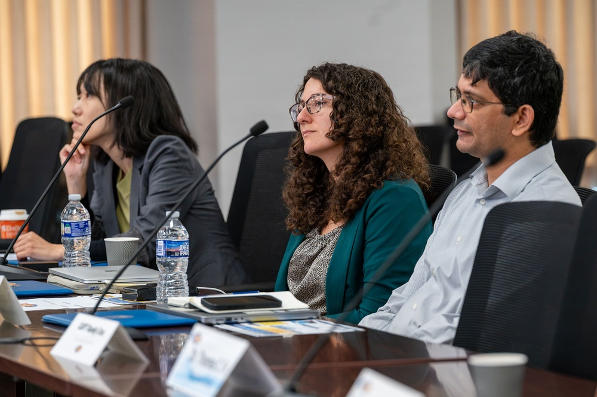

Michael Walls · DVIDS 10036749 · Public domain · Drs. Akane Sano, Anna Tarakanova, and Joydeep Biswas listen to remarks at the Chief of Naval Research Fellows inaugural ceremony, ONR headquarters, Arlington, Virginia. Photo taken Oct. 15, 2026, posted Oct. 21, 2026.
DVIDS
Office of Naval Research seated the first class of Chief of Naval Research Fellows
The Office of Naval Research said it honored the inaugural Chief of Naval Research Fellows at a ceremony Oct. 15 at headquarters in Arlington. The first national selection drew more than 180 nominations from about 70 campuses. Eight fellows attended, including researchers from Duke, Carnegie Mellon, Rice, and the University of Texas at Austin. Dr. Thomas C. Fu, the executive director performing the duties of Chief of Naval Research, said the partnership is meant to turn discovery into capability for Sailors and Marines. Dr. Reginald Williams, the program officer, said fellows leave with a view of how their work supports the warfighter. The official still, posted today, shows three of them listening to remarks.
DVIDS · Read source →